prompts.chat은 어떤 곳인가요
잘 쓰는 사람들은 프롬프트를 백지에서 시작하지 않는다는 말로 영상이 열려요. 남들이 이미 다듬어 둔 걸 가져와서 써요. 그 창고로 소개하는 곳이 prompts.chat이에요. 주소창에 사이트 이름을 치면 'The world's largest open-source prompt library for AI(Artificial Intelligence)'라는 소개 문구가 떠요.
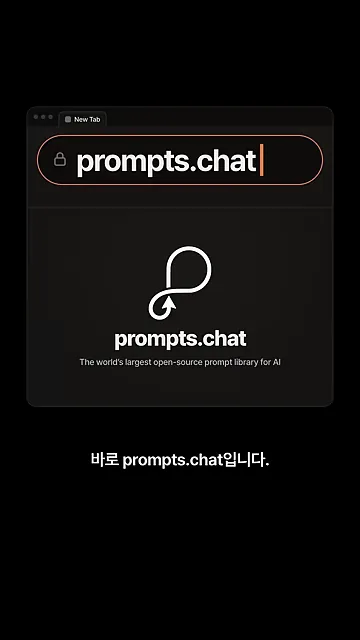
이어서 화면은 출발점을 달력으로 보여 줘요. 2022년 11월 30일 칸에 ChatGPT 공개가, 12월 5일 칸에 GitHub 아이콘과 '저장소 시작'이 찍혀 있어요. 아래 칸의 f/awesome-chatgpt-prompts가 그때 시작한 저장소 이름이에요.
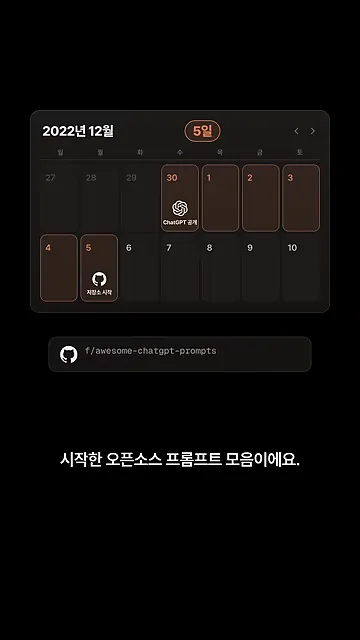
업무에 써도 되느냐는 질문에도 답해요. 여기 올라온 프롬프트는 CC0 1.0 유니버설로 공개돼 있어서, 올리는 순간 퍼블릭 도메인이 돼요. 출처를 밝히거나 허락을 받지 않아도 회사 문서에 그대로 넣을 수 있다는 뜻이에요.
종류는 글쓰기 프롬프트만이 아니에요. 사이트 상단에 텍스트·이미지·비디오·스킬 네 탭이 있고, 이미지 탭에는 히말라야 절벽 위 사원처럼 장면을 묘사한 이미지 생성 프롬프트가 썸네일과 함께 올라와 있어요.
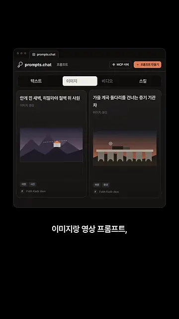
스킬 탭으로 넘어가면 카드 모양이 달라져요. '검색 노출 점검기', '클라우드 네트워크 주소 설계' 같은 카드마다 SKILL.md, references/, scripts/가 적혀 있어요. 한 줄짜리 프롬프트가 아니라 폴더 하나로 된 클로드 스킬이라는 표시예요.
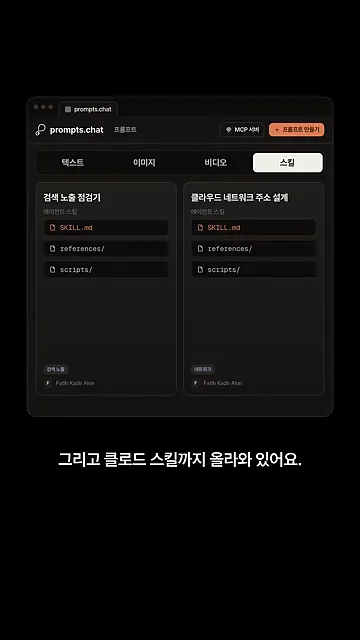
클로드 코드·코덱스에 연결하기
prompts.chat은 검색·가져오기 도구를 MCP(Model Context Protocol) 서버로 내놓고 있어요. 그래서 연결은 사이트를 열지 않고 터미널에서 끝나요. 클로드 코드가 깔려 있다면 아래 명령을 넣고 클로드 코드를 새로 열면 돼요. 화면 위쪽의 'Claude Code 설치됨' 표시가 전제 조건이에요.
claude mcp add --transport http prompts.chat https://prompts.chat/api/mcp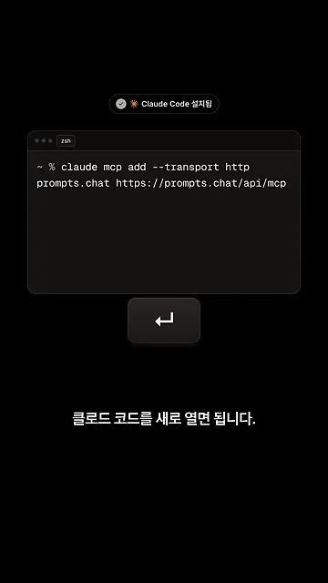
코덱스도 같은 주소를 쓰면 돼요. 화면에서는 ~/.codex/config.toml 파일에 [mcp_servers.prompts_chat] 표를 만들고 그 아래 url에 같은 주소를 적어요. 그 밑의 '회원가입'과 'API 키' 버튼 옆에 '검색·가져오기는 그냥 됨'이라고 적혀 있어요. 검색만 쓸 거면 가입도 키도 필요 없다는 뜻이에요.
[mcp_servers.prompts_chat]
url = "https://prompts.chat/api/mcp"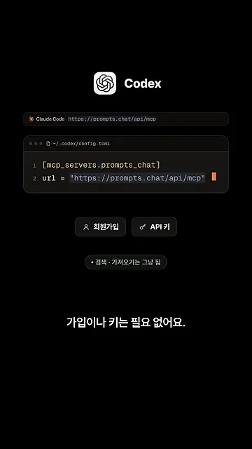
두 도구를 나란히 놓으면 이렇게 정리돼요.
| 클로드 코드 | 코덱스 | |
|---|---|---|
| 등록하는 곳 | 터미널 명령 claude mcp add | 설정 파일 ~/.codex/config.toml |
| 주소 | https://prompts.chat/api/mcp | |
| 등록 뒤 | 클로드 코드를 새로 열고 /mcp로 확인 | 같은 주소로 등록하면 끝 |
| 가입·키 | 검색·가져오기만 쓰면 필요 없어요 | |
연결됐는지는 클로드 코드에서 /mcp를 쳐 보면 바로 알 수 있어요. MCP servers 목록에 prompts.chat이 있고 오른쪽에 ✓ connected가 뜨면 끝이에요.
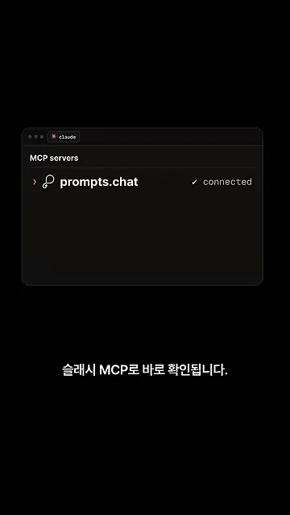
찾고, 채우고, 바로 쓰기
연결하고 나면 "경쟁사 분석 프롬프트 찾아 줘"라고 말하기만 하면 돼요. 화면을 보면 클로드가 search_prompts 도구를 부르면서 검색어를 "SWOT"로 바꿔 넣었어요. 돌아온 결과에서 Strategy Consultant, SWOT(Strengths, Weaknesses, Opportunities, Threats) Analysis for Political Risk and International Relations, 'RIP McKinsey' 컨설턴트 대체 프롬프트 세 개를 '쓸 만한 후보'로 추려 보여 줘요.
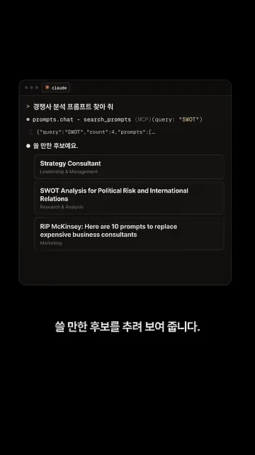
빈칸은 물어보고 채워요
고른 Strategy Consultant 프롬프트 본문을 보면 끝에 ${industry}라는 빈칸이 있어요. 맥킨지·BCG(Boston Consulting Group)·베인 출신 전략 컨설턴트로서 어떤 업종의 고객을 분석하라는 내용이라, 업종이 정해져야 쓸 수 있어요. 클로드는 이런 빈칸을 보면 어느 업종인지 먼저 물어보고 채워 줘요.
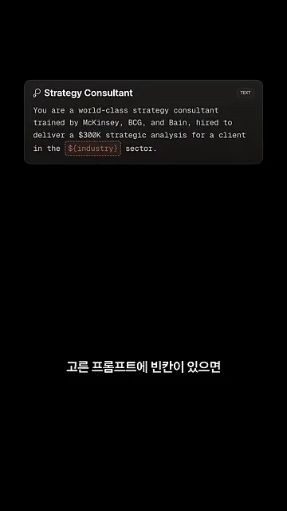
채운 프롬프트로는 그 자리에서 결과물까지 나와요. 화면 예시는 화장품 업종으로 채운 'Strategic Brief'예요. 경쟁사 A·B·C의 사업 모델, 가격, 유통, 포지셔닝을 한 표에 놓고, 아래에 강점(S)과 약점(W)을 붙인 한 장짜리 보고서예요.
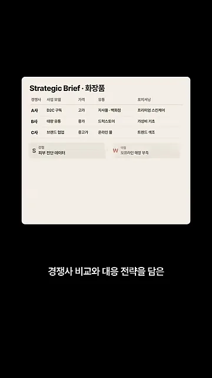
스킬은 폴더째 넣어 줘요
클로드 스킬은 "파일 받아서 내 스킬 폴더에 넣어 줘"라고 하면 돼요. 위 카드는 TODO Comment Debt Tracker라는 스킬이고, 아래 파일 탐색기는 그 파일들이 .claude › skills › todo-comment-debt-tracker 안에 들어간 모습이에요. SKILL.md와 references/, templates/ 파일이 그대로 옮겨져 있어요.
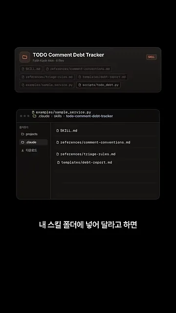
알아 둘 한계 두 가지
첫째, 검색어가 한국어로 들어가면 결과가 거의 안 나와요. 화면에는 search_prompts(query: "경쟁사 분석")만 찍히고 후보 목록이 비어 있어요. 앞에서 SWOT로 찾았을 때와 비교해 보면 차이가 분명해요.
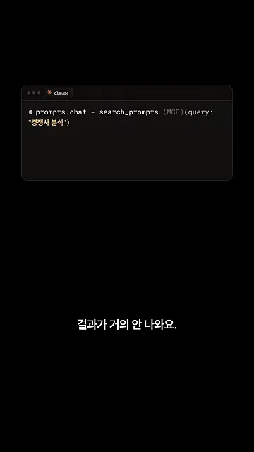
둘째, 프롬프트를 더 좋게 고쳐 주는 improve_prompt 기능은 자물쇠가 걸려 있어요. 따로 키를 받아야 열려요.
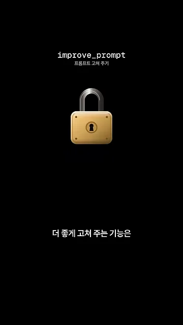